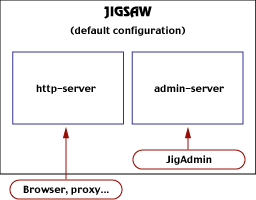

Get the appropriate package (see FAQ).Then read the README file from the documentation!
Follow the installation instructions (i.e. run the installation script).
Jigsaw works with a JDK >= 1.2 (since Jigsaw 2.1.0). We recommend the use of a JDK version >= .3 for Jigsaw 2.2.* even if it works with 1.2, otherwise some non-critical functionalities may be available.
Be sure that your CLASSPATH is set up correctly.
java.lang.NoClassDefFoundError), you probably have a wrong
CLASSPATH.First, be sure that recompilation is really what you want.
Set the appropriate CLASSPATH to use the classes instead of the jar from the package.
CLASSPATH = <instdir>/Jigsaw/src/classes/:...
instead of
CLASSPATH = <instdir>/Jigsaw/classes/jigsaw.jar:...
Of course be sure to add all the external jars needed by your version of Jigsaw, servlet.jar, sax.jar and xp.jar. Some sources may require additional packages like jakarta-oro and jtidy.
Then you can use make in any directory
under<instdir>/Jigsaw/src/classes. Another way if you want
to compile everything faster, see this:
cd <instdir>/Jigsaw/src/classes && javac -O `find .
-name \*.java`
(Windows Users will uses \ instead of / in paths).
Just type in the following command:
cd <instdir>/Jigsaw/Jigsaw
java org.w3c.jigsaw.Main -host host -root
<instdir>/Jigsaw/Jigsaw
(Windows Users will uses \ instead of / in paths).
Jigsaw should be running, and will probably have emited a message like:
jigsaw Sample/Jigsaw> java org.w3c.jigsaw.Main
loading properties from:
/0/w3c/cbournez/Jigsaw/Jigsaw/config/server.props
*** Warning : JigAdmin[2.2.2]: no logger specified, not logging.
JigAdmin[2.2.2]: serving at http://ender.inria.fr:8009/
Jigsaw[2.2.2]: serving at http://ender.inria.fr:8001/
Be careful. All the configuration is not handled by plain text
configuration files. There is a slight difference between what is server
Configuration and what is Administration. Configuration includes definition
of basic server properties (such as server root, port, keep alive,
logging,...). All these properties are set in
Jigsaw/config/http-server.props. Administration, on the other
side, deals with the way the resources are served. Jigsaw includes an
Administration server, which has it self properties
(inJigsaw/config/admin-server.props). It allows to configure
ressources served throught JigAdmin.
Most of the usual tasks on the server can be completed through the admin
server and JigAdmin. Note that JigAdmin also allows to perform the
admin-server administration tasks as well.

You can find a designer-friendly description of what a resource is here. All what you need to know is that a resource is an object you may want to serve with your Jigsaw server. It can be many kinds of objects but it is usually a static file or a dynamically generated content. Here is a summarized list of resources:
According to the type of resource, the server will use an appropriate mean to serve it, which is described by a frame. You can find also a designer-friendly documentation about frames. However, here is a summarized view of frames existing in Jigsaw:
Of course the answer is no. The server has a default behaviour which allows to automagically "configure" the resources with appropriate frames. This is done by an indexer. Of course, you can override or tune this behaviour by changing the default indexer. For example, you could choose among the various existing indexers (ContentTypeIndexer, SampleResourceIndexer...). Moreover, you can choose differents indexers for different subdirectories in your resources repository. It does not prevent from configuring manually resources and frames, even in an indexer's scope. An indexer always leave untouched manual configurations.
To summarize: the default root for the Jigsaw resource tree is
Jigsaw/WWW/.(Note that in a freshly installed Jigsaw, it is not
empty). If you simply add an HTML file in this directory, the default indexer
will automatically configure a FileResource with an attached HTTPFrame the
first time you will request this file to the server.